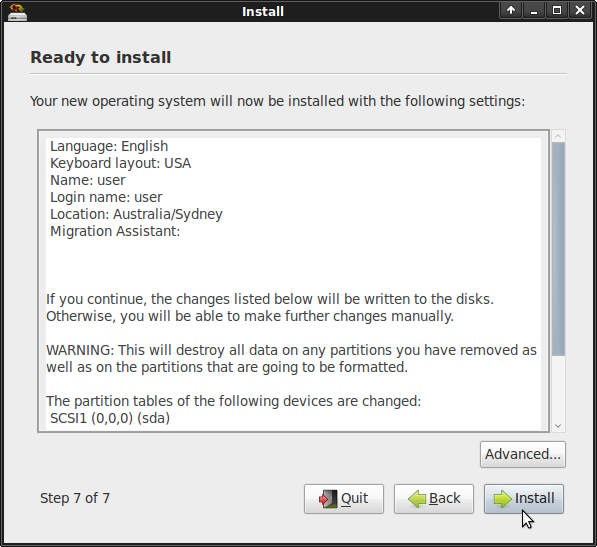

OSGeoLive telepítése a merevlemezre¶
OSGeoLive ugyanúgy telepíthető a merev lemezre mint egy másik Ubuntu disztribúció.
Ez az eljárás egy virtuális gépen belül is futtatható egy állandó OSGeoLive virtuális gép létrehozásához a DVD-ről vagy az ISO image-ről.
Rendszer követelmények¶
- 20 GB szabad merevlemez terület
OSGeoLive telepítése¶
Válassza ki Install RELEASE
Írja be a jelszót „user”
Válaszon nyelvet
Válasszon időzónát
Billentyűzet választás

{kind=link}
{kind=link}
{kind=link}
{kind=link}
{kind=link}
Adja meg, hogy melyik lemezre szeretné telepíteni. (Óvatosan, ez törölhet egy meglévő telepített partíciót).
{kind=link}
Alapértelmezett beállítások:

- Név = „user”
- felhasználó = „user”
- jelszó = „user”
- számítógép név = „osgeolive”
- Automatikus bejelentkezés
{kind=link}
Válassza az Install-t
Készítsen egy csésze kávét magának amíg a telepítés folyik.
Ez minden.
Javaslat
Telepítési tippek, abban az esetben ha a „user” felhasználónévtől eltérőt használ a telepítésnél, akkor a tomcat alkalmazásoknak engedéllyel kell rendelkezniük a service parancs futtatásához, ahogy a https://trac.osgeo.org/osgeo/ticket/1153 oldalon írják.